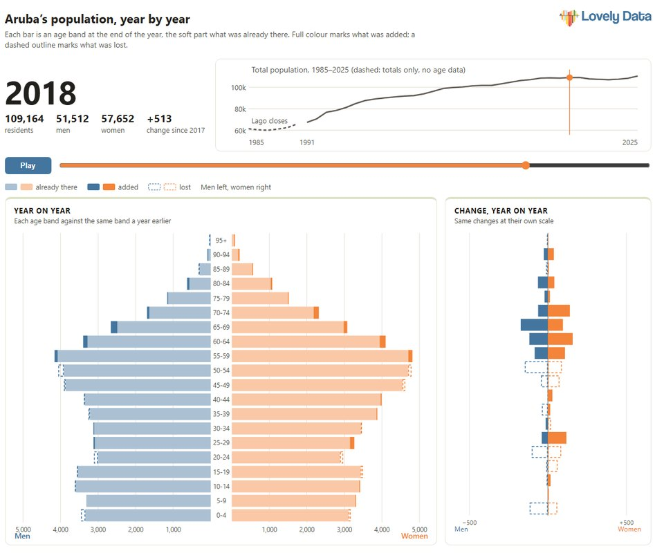

Small islands, told with data.
Island economies run on numbers that are scattered, late or hard to compare. We gather them, check them against their sources and turn them into stories anyone can follow. We start with Aruba and are building out across the region.
Stories

Aruba’s population, year by year
Thirty-five years of CBS population figures by age and sex, on one slider. See which age groups grew and which shrank each year, and follow the same people five years on to see who arrived and who left.
Open the interactive pyramidIn the works: ten years after the Airbnb arrival, where Aruba’s visitors sleep now, and what changed since we first wrote about it in 2016.
Work with us
A regional database
Population, tourism and economic series for small islands, checked against their sources, with every revision preserved. See what is in it.
Custom data and dashboards
The series behind a decision, built and maintained for your organisation, from a single indicator to a full dashboard.
Training
Hands-on R training for teams that want to do this themselves, using their own data from the first session.
Contact
Need a series that is not here yet, or a story told with your own data? Rendell de Kort, rendell@c-economics.com.